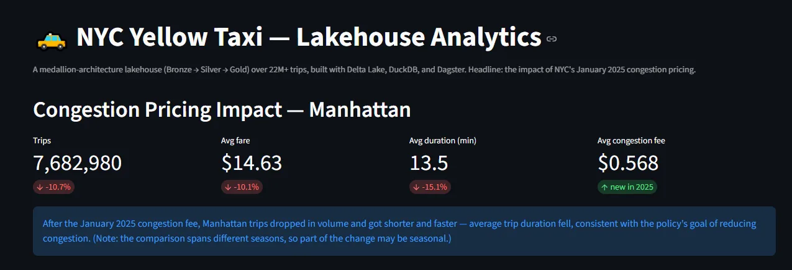

Lakehouse de táxis de NY
Um lakehouse em Delta Lake sobre 42 milhões de corridas, processado mês a mês, que separa o efeito da taxa de congestionamento do efeito do inverno.
−0,4 ptnas corridas por dia em Manhattan por causa da taxa, tirando o inverno; a queda bruta era de 10,7%

- Decisão que apoia
- Avaliar se uma política pública (a taxa de congestionamento) mudou o comportamento.
- Quem usa
- Analistas de políticas públicas, mobilidade e planejamento urbano.
- Quanto custa errar
- Concluir em cima de dados sujos ou incompletos leva a uma avaliação de política errada.
- Como gera valor
- Com os mesmos meses do ano anterior como controle, a queda de 10,7% nas corridas em Manhattan se mostra quase toda efeito do inverno (−0,4 ponto atribuível à taxa); o efeito da taxa está nas corridas mais curtas em tempo (−3,6 pontos), com a mesma distância.
- Riscos e limites
- Supõe que o inverno muda o uso de táxi do mesmo jeito todo ano; outras mudanças entre 2024 e 2025 não são separadas.
Problema
Saber se a taxa de congestionamento de 2025 em Nova York mudou o uso de táxis: a taxa começou em janeiro, então um simples antes e depois mistura a taxa com o inverno, e os arquivos mudam de schema no meio e trazem registros inválidos.
Solução
Camadas Bronze, Silver e Gold em Delta Lake sobre duas temporadas de outubro a março, transformadas com DuckDB e orquestradas pelo Dagster em partições mensais. A estimativa desconta o que o inverno fez na temporada anterior à taxa, e onze checagens de qualidade barram dados ruins antes de chegarem aos números.
Como funciona
- Cada mês é uma partição do Dagster gravada com overwrite por predicado: entra ou é refeito sozinho, e refazer não muda nada.
- Os testes provam que montar mês a mês ou tudo de uma vez dá as mesmas tabelas Gold.
- Os mesmos meses um ano antes, sem a taxa, servem de controle para a estação do ano.
- Checagens de qualidade bloqueantes param a execução antes que linhas ruins cheguem à Gold.
Resultados
| −0,4 pt | nas corridas por dia: a queda bruta de 10,7% é quase toda inverno |
| −3,6 pt | na duração das corridas atribuível à taxa, com a distância igual |
| 42,1M | de corridas em doze partições mensais |
Limites
Supõe que o inverno muda o uso de táxi do mesmo jeito todo ano; só táxis amarelos.
Stack
Delta Lake, DuckDB, Dagster, Streamlit